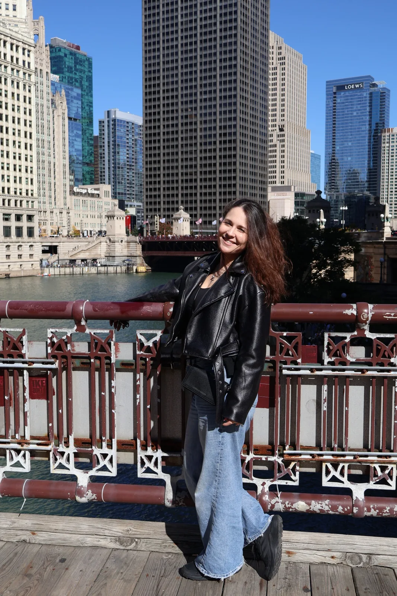
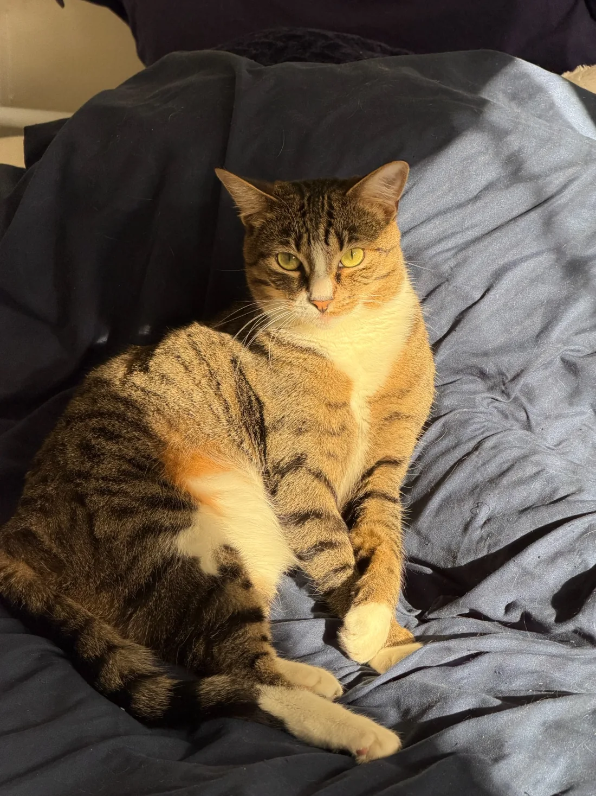

Hola, soy Alona.
Estoy buscando un hogar de alquiler de larga duración en Castellón de la Plana, donde mi gata Nikki y yo podamos comenzar una nueva etapa.
Conóceme un poco
Busco algo más que un piso.
Soy ucraniana y me he mudado recientemente a España. Trabajo en remoto en el área de marketing y comunicación para una empresa estadounidense.
Soy una persona tranquila y responsable. Valoro el orden, la comodidad y el cuidado del espacio en el que vivo.
En marketing y comunicación para una empresa estadounidense.
Busco estabilidad y un lugar al que llamar hogar.
Mi ciudad elegida para esta nueva etapa.

Nikki 🐾Te presento a Nikki.
Nikki es mi gata de tres años. Está esterilizada y es parte de mi familia. Nos hemos mudado juntas a España y ahora buscamos un hogar donde las dos seamos bienvenidas.
Para mí es importante cuidar la vivienda con responsabilidad y respeto.
Un hogar para quedarnos.
Busco un piso de alquiler de larga duración en Castellón de la Plana. Me gustaría encontrar un lugar estable, tranquilo y acogedor.
Busco una vivienda para establecerme.
Mi gata Nikki vivirá conmigo.
Puedo visitar los pisos por las mañanas o los fines de semana.
Quizá tu piso sea nuestro próximo hogar.
Estaré encantada de responder a cualquier pregunta y facilitar la documentación necesaria para valorar mi solicitud de alquiler.
Contactar por WhatsApp¡Muchas gracias por tu tiempo!